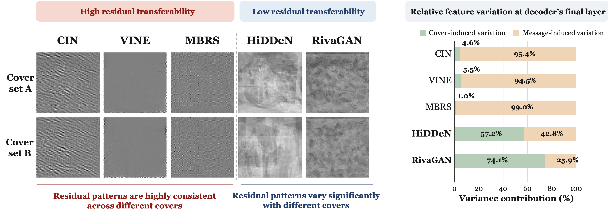
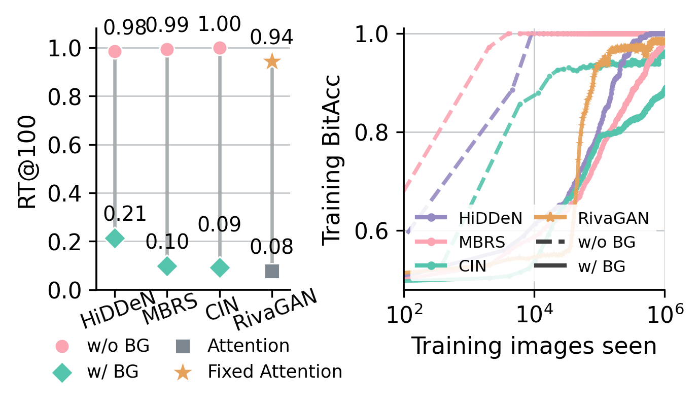
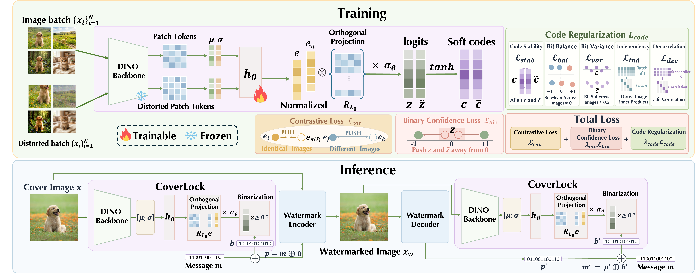
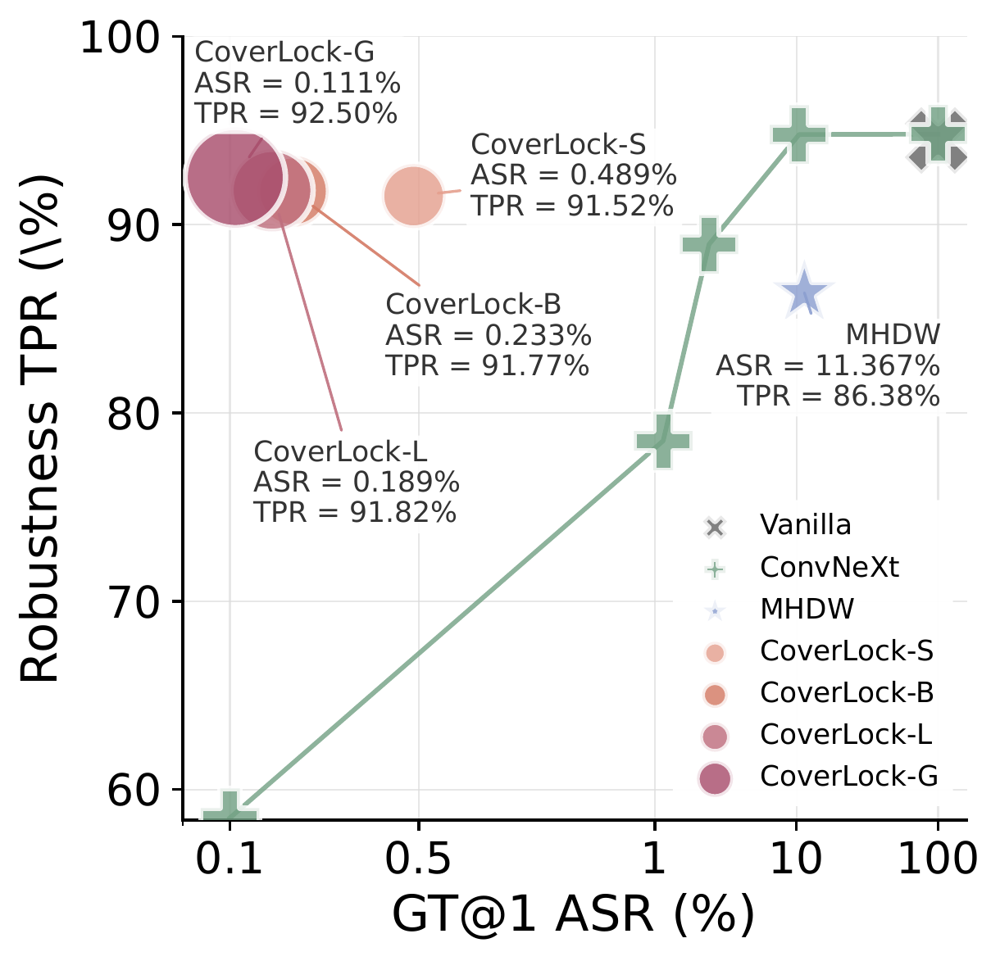

Neural Image Watermarking · 2026
Residual Transferability
in Neural Image Watermarking
Why can watermark residuals be transplanted to unrelated images—and how can we bind them back to image content?
1National University of Singapore
Some neural watermark models learn nearly image-independent residuals. An attacker can estimate that residual from a released image and transfer its identity to arbitrary content. Architectural content binding helps; CoverLock brings the same protection to already-trained watermark systems.
A watermark residual can leave its image behind.
Let a released watermarked image be y = x + r. A residual-based forger estimates r and adds it to an unrelated target image x′. If the decoder recognizes the residual without checking the carrier content, x′ + r inherits the source watermark.
Released image
A valid watermarked image exposes both its visible content and a hidden message-bearing residual.
Forgery residual
The attacker isolates reusable watermark evidence; no access to the original encoder is required.
False attribution
An unrelated image is accepted as carrying the source identity.
Residual transfer attack. The attack succeeds when watermark evidence is portable across carrier images.
The model may take a shortcut.
A watermark encoder is asked to preserve a message, but is not necessarily required to make that message depend on the image. The easiest solution can be a consistent, cover-independent residual: different images receive similar patterns for the same payload.
Same message, different images
The learned residuals remain strongly aligned.
Average away the image content
Multi-image estimation exposes the shared component.
Transfer the shared component
The decoder accepts it on a new carrier because it never learned a strong content dependency.

Not the training recipe. The architecture.
We first control for common training-side explanations. Changing the recipe does not reproduce the large gap in residual transferability, directing attention to how image and message information are combined inside the network.
of the RT gap
Broadcasting the message changes residual transferability.
Adding broadcast fusion to MBRS sharply lowers RT, while removing it from HiDDeN raises RT. The models still learn to decode during training; what changes is whether message information is forced to interact spatially with the image.

Content dependence is induced by architecture. Preserving local image–message interaction makes the learned residual less reusable across unrelated covers.
CoverLock binds the payload to the carrier.
Redesigning an encoder helps future models, but deployed watermark systems already exist. CoverLock is a plug-in wrapper: it derives a stable image-conditioned bit mask and XORs it with the user message before watermark encoding.

A better security–robustness frontier.
CoverLock does not obtain security by simply rejecting more distorted images. It achieves a substantially more favorable trade-off: residual-transfer attacks are suppressed while genuine watermarks remain detectable after common image distortions.

Pareto frontier
More secure and more robust.
Points toward the upper left are better: lower forgery success and higher detection of genuine watermarks after distortion. All CoverLock variants occupy this favorable region.
- Security ↓
- 0.111% GT@1 ASR
- Robustness ↑
- 92.50% distortion TPR
CoverLock-G versus MHDW: ASR decreases from 11.367% to 0.111%, while robustness TPR increases from 86.38% to 92.50%.
Citation
@misc{dong2026residual,
title = {Residual Transferability in Neural Image Watermarking},
author = {Dong, Ziping and Li, Qi and Wang, Xinchao},
year = {2026},
eprint = {2609.32241},
archivePrefix = {arXiv},
primaryClass = {cs.CR}
}